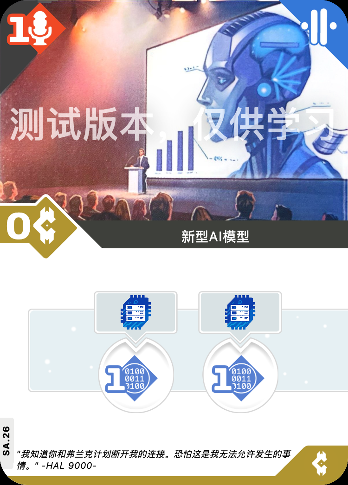
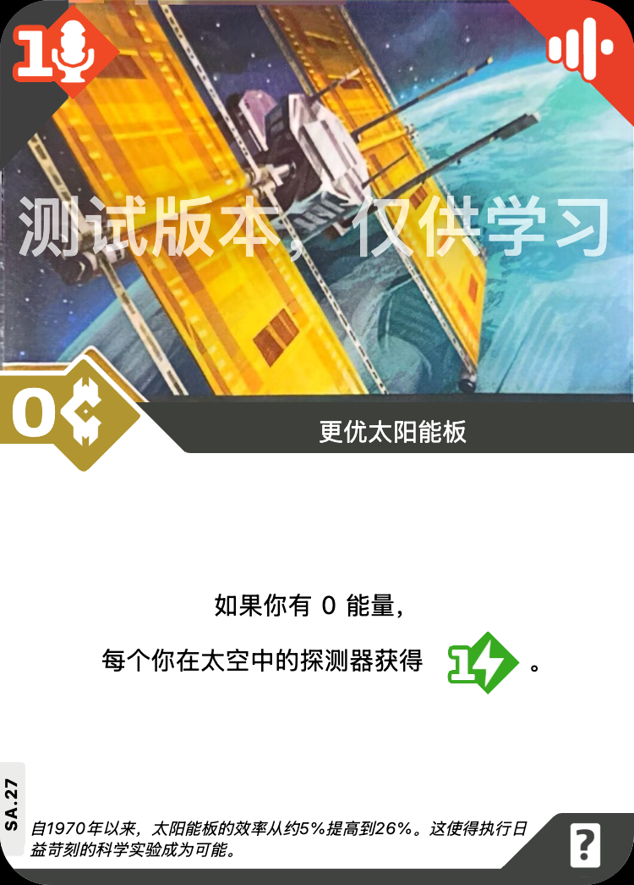

启用新增计划：65条实际输入
| 续跑序号 | 相关卡牌 | 实际操作 | 本次模拟输入 | 根与搜索耗时 ms |
|---|---|---|---|---|
| 1 | dlc_20.png | 81 | 107.28 | |
| 2 | dlc_32.png | 42 | 40.92 | |
| 3 | 放置数据 | 3 | 16.07 | |
| 4 | 第一排放置位 1 | 0 | 10.44 | |
| 5 | 放置数据 | 0 | 7.66 | |
| 6 | 第一排放置位 2 | 0 | 10.26 | |
| 7 | 放置数据 | 0 | 6.79 | |
| 8 | 第一排放置位 3 | 0 | 10.2 | |
| 9 | 放置数据 | 0 | 6.72 | |
| 10 | 第一排放置位 4 | 0 | 10.18 | |
| 11 | 收入 dlc_25.png | 0 | 10.85 | |
| 12 | 放置数据 | 0 | 7.47 | |
| 13 | blue2 下方 | 0 | 12.82 | |
| 14 | 结束回合 | 0 | 6.79 | |
| 15 | 标记 A | 1 | 12.98 | |
| 16 | 扫描 | 14 | 26.37 | |
| 17 | 扫描 南河三 | 0 | 13.05 | |
| 18 |  | dlc_26.png → 南河三 | 24 | 47.02 |
| 19 | 结束公共牌扫描 | 0 | 13.78 | |
| 20 | 移动 5 逆时针 | 0 | 14.34 | |
| 21 | 扫描 天狼星A | 0 | 17.72 | |
| 22 | 放置数据 | 0 | 9.12 | |
| 23 | blue1 下方 | 0 | 11.83 | |
| 24 | 结束回合 | 0 | 6.58 | |
| 25 | 扫描 | 116 | 119.68 | |
| 26 | 扫描 南河三 | 0 | 12.72 | |
| 27 | dlc_19.png → 室女座61 | 0 | 13.1 | |
| 28 | 结束公共牌扫描 | 0 | 14.17 | |
| 29 | 移动 5 逆时针 | 0 | 14.0 | |
| 30 | 扫描 天狼星A | 0 | 17.67 | |
| 31 | 外星人 1 粉4号位（1分+外星人牌） | 0 | 18.23 | |
| 32 | 获得展示的低重力研究 | 0 | 21.44 | |
| 33 |  | 结算 amiba_0.webp | 1 | 28.35 |
| 34 | 结束回合 | 0 | 11.49 | |
| 35 | 放置数据 | 9 | 28.08 | |
| 36 | 第一排放置位 5 | 0 | 10.7 | |
| 37 | 放置数据 | 0 | 7.14 | |
| 38 | 第一排放置位 6 | 0 | 10.24 | |
| 39 | 分析 | 0 | 6.58 | |
| 40 | 外星人 1 蓝3号位（外星人牌） | 0 | 12.37 | |
| 41 | 获得展示的生物特征筛选 | 0 | 14.14 | |
| 42 | 放置数据 | 0 | 10.89 | |
| 43 | 第一排放置位 1 | 4 | 23.36 | |
| 44 | 放置数据 | 0 | 7.38 | |
| 45 | blue2 下方 | 0 | 10.59 | |
| 46 | 放置数据 | 0 | 7.03 | |
| 47 | 第一排放置位 2 | 0 | 10.3 | |
| 48 | 放置数据 | 0 | 7.11 | |
| 49 | 第一排放置位 3 | 0 | 10.23 | |
| 50 |  | amiba_5.webp：弃牌角标 | 0 | 7.09 |
| 51 | 放置数据 | 0 | 6.66 | |
| 52 | blue1 下方 | 0 | 11.77 | |
| 53 | 结束回合 | 0 | 6.42 | |
| 54 |  | amiba_9.webp：弃牌角标 | 11 | 29.34 |
| 55 | 研究科技 | 0 | 7.79 | |
| 56 | 研究 blue3（蓝槽 3） | 0 | 11.0 | |
| 57 |  | dlc_27.png | 4 | 21.06 |
| 58 |  | 结算 amiba_1.webp | 3 | 17.72 |
| 59 | blue_2（4分） | 0 | 13.01 | |
| 60 | 结束回合 | 0 | 8.25 | |
| 61 | 环绕金星 - 奖励：首次环绕：额外获得 3 分；获得 6 分；获得 1 次收入（R5，1信用点 + 1能量） | 4 | 11.39 | |
| 62 | 收入 dlc_27.png | 0 | 14.27 | |
| 63 | 结束回合 | 0 | 7.36 | |
| 64 | PASS | 1 | 7.97 | |
| 65 | b_111.webp | 2 | 16.25 |